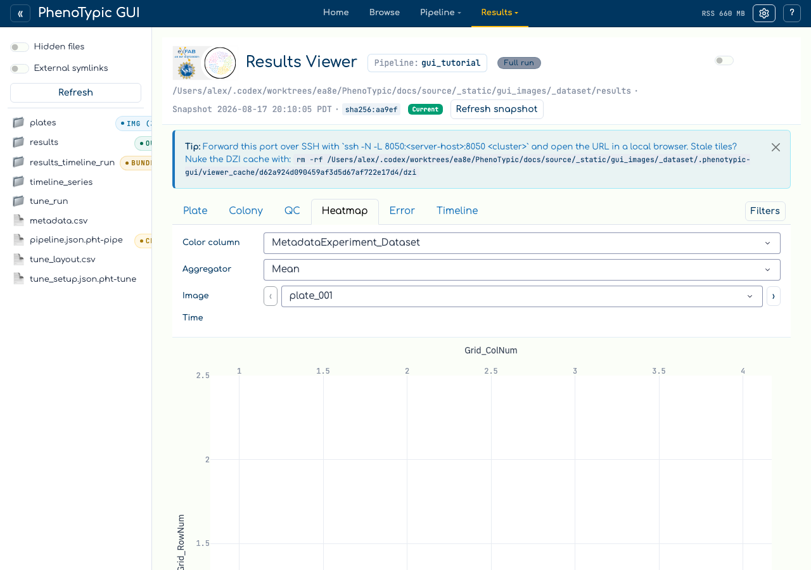

Heatmap exploration#
The Heatmap tab in the Results Viewer pivots
(Grid_RowNum, Grid_ColNum) into a plate-shaped Plotly heatmap.
Coloring is driven by any measurement column — or, when QC checks are
configured, by any QC_*_Severity column the QC tab emits into the
augmented frame — so the same surface doubles as a quick-look quality
dashboard.
The exploration loop:
Pick a color column (e.g.
Size_Area,Shape_Circularity, or aQC_*_Severitycolumn).Pick an image from the dropdown.
If multi-timepoint data is present, sweep the time slider to watch the colour pattern evolve.
Spot edge effects, contamination patches, or replicate-level anomalies at a glance — then curate the offending cells from the Plate / Colony tabs and watch the × overlay appear on the same heatmap.
Prerequisites#
A CLI run that emitted
Grid_RowNum/Grid_ColNumcolumns intodeliverables/measurements.parquet(i.e. aGridFinder-aware pipeline). The empty-state placeholder is rendered when these columns are absent.Optionally, one or more configured QC checks (see QC curation loop) so the color picker surfaces
QC_*_Severitycolumns.
Walkthrough#
Open the Viewer tab in the hub and pick the Heatmap sub-tab:

When Grid_RowNum / Grid_ColNum are absent from the filtered frame
(as is the case for the synthetic tutorial dataset, which uses a
non-grid pipeline) the tab renders an explanation card pointing at
GridMeasureFeatures. No exceptions, no blank figure — the empty
state is a first-class affordance.
On a real grid-aware run, the top strip shows four controls:
Color column: dropdown listing every measurement column in the schema plus any
QC_*_Severitycolumns currently emitted (recipe-revision-aware — adding a QC check at runtime adds its severity column to the dropdown).Aggregator:
mean / median / max / min. Aggregation fires after the image-file filter, so it only matters when more than one row shares a(Grid_RowNum, Grid_ColNum, Metadata_Time)bin.Image: the source image whose colonies are pivoted.
Time: slider with marks at every unique numeric
Metadata_Timevalue. Hidden when only one timepoint exists, when the column is absent, or when coercion to numeric yields all-NaN.

The heatmap renders below the strip. Hover labels carry
(row, col) — value — ImageFile — Object_Label. Curated cells —
those tracked in STORE_REMOVED_KEYS — render as COLOR_MUTED
× markers on a secondary go.Scatter trace, visually distinct from
genuinely low-value cells in the colormap.
Common gotchas#
Empty state vs. NaN cells: the empty-state card fires only when the grid columns are absent from the schema. If they’re present but every cell in the current
(image, time)slice is NaN, the heatmap still renders — just with no coloured cells. Switch the time slider or aggregator to surface valid bins.Non-numeric time values: if
Metadata_Timecarries strings like"T0"/"baseline",pd.to_numeric(..., errors="coerce")drops those rows and a small caption (skipping N non-numeric time values) appears below the slider. Coerce upstream in your metadata if you want every row to participate.Aggregator semantics: for the typical one-row-per-well case flipping aggregator is a no-op. It only changes the picture when the pipeline emits multiple rows per well (e.g. multi-object detection without
GridMeasureFeatures’s per-cell collapse).
Where to next#
QC curation loop — produce
QC_*_Severitycolumns so the heatmap can colour by quality instead of raw measurements.View Results — curate flagged cells from the Plate / Colony tabs; the × overlay updates in lockstep.
Analysis — fit a model against the cleaned measurements.